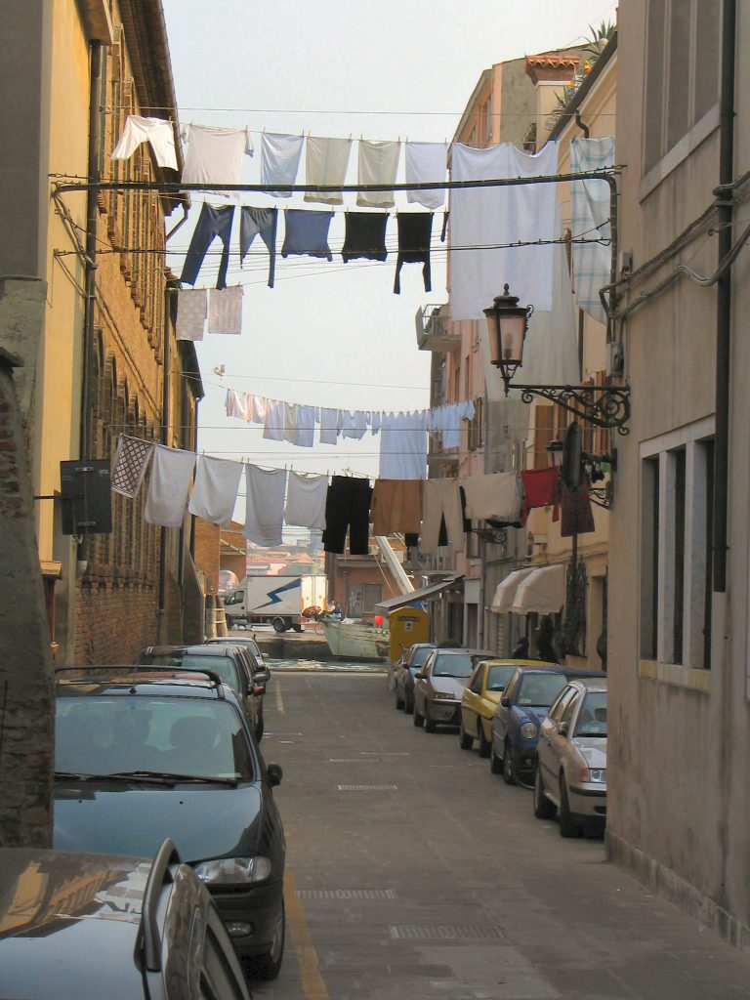

Photo by Paolo Tosolini
Even though dryers are becoming popular, the majority of Italians still dry their clothes by hanging them on a rack inside their homes or on a rope outside their windows. {This is an excerpt from chapter 15 “Miscellaneous” of the eBook “Italy from the Inside. A native Italian reveals the secrets of traveling in Italy”. To buy the eBook click here}